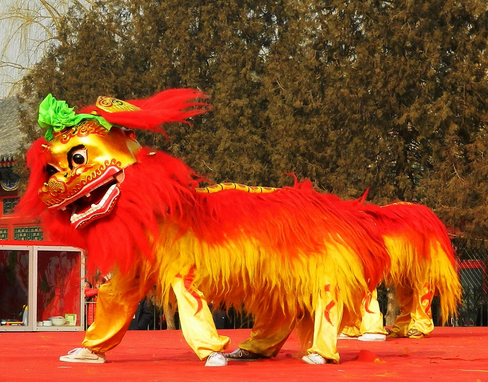
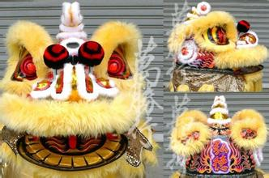

Different types of lion dance
There is a famous saying "North lion plays balls and South lion eat greens".
North lion plays and do acrobatic moves on top of a big ball.
South lion eat the lettuce and spit it out for good luck.
North Lion 北獅
North lion looks more like a real lion, and the design is more simple and hairy looking. If there is usually a bow on top of the lion's head: If the bow is red it is a male lion, if it is green it is a female.
Male and female will usually come out as a pair or a large lion with a small lion
The routine usually consist of acrobat moves.
South Lion 南獅
South lion is usually fiercer and like a mythical creature, moves focuses more on horse stands.
The main difference in design is that the eyes, ears and mouth of a South lion can be moved while the north lion's cannot. And there is a horn on top of the lion's head.
There are two main styles of South Lion.
Foshan style 佛山

The Fo Shan style the head is quite round.
Hokshan style 鶴山
The Hokshan style the head is quite flat with a mouth like duck beak.